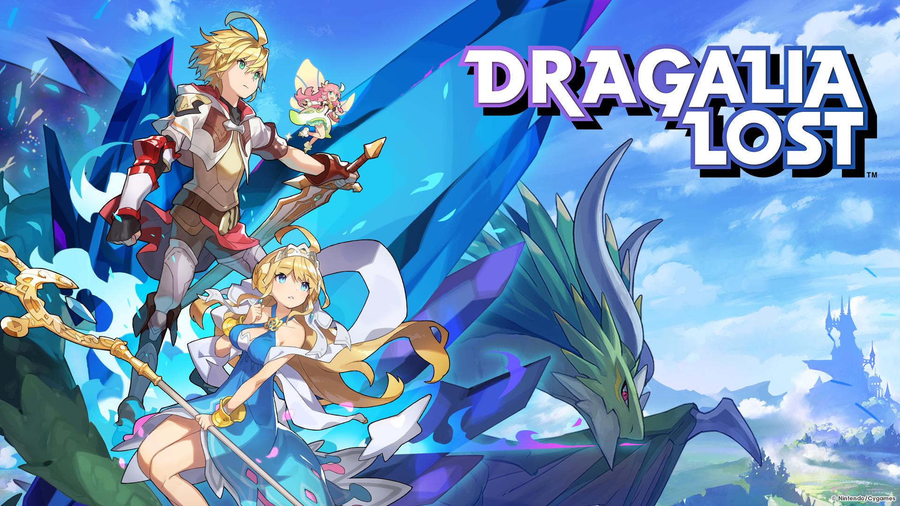

Pasit's Diary
The labyrinth of memory
 2021
2021
2022 Recap
Probably the worst year granted unto my life yet. Holy Marie, This year might as well take the cake for being the most awful year in my life. Let's list all of them here.
- I thought things would start to look up after graduating with my friends from high-school. The graduation day, I went to school late. By the time I arrived, everyone had almost finished taking pictures yada yada. This might seems minor, but for it was like a bad omen.
- My favorite Mobile game, Dragalia Lost, announced closure and EOS for undisclosed reasons. This might seems silly but for me, I could't sleep, eat without feeling sad and sorrow. The game itself had been like one of my best friend, it was what helped me push through high-school and strive for greater things. But now that it's gone, it made me feel like I've just lost a goal in my life. I believe this is what started this year to one HELL of a year.
- During my school break, I was requested by my aunt to tutor my little cousin who was about to have an entrance exam for high school. Seeing it as a new and exciting experience, I agreed and to be honest it was ok not a good or bad experience. But what she asked me, if she's fit for English Program in high school, of course I advised against it considering that I barely scraped by with excellent grade in my time in semi-English Program. And what do you know she passed, I hoped to myself that she could handle herself, if only I knew my little was in vain.
- After my little was accepted to her new school she struggled to adjust herself to more difficult lesson in high school. And guess who need take responsibility and continue tutoring her of course, It's me! who else could it be!? I had to clean up the shit that I, myself, had a hand creating it.
- Well I know it's my job to teach that girl physics, chemisty, Biology, and god know what. Considering, I just graduating high-school it wasn't that difficult that I couldn't handle. However, I felt like the girl didn't even pay attention to me most of the time, sometimes she even just disappeared and completely missed the study schedule completely. The nerve of that girl! Do keep in mind that I mostly didn't get any breaks during that time, I needed to study java language programming and improve my problem solving skills.
- The story of my tutoring career had been floating around my family, Now my former mentor, called me. She wanted me to tutor her former students whom she could no longer teach. I was cornered into accepting. Now I said goodbye and farewell to my stress free break. On the bright side, I earned a meager sum of money from all that grueling tutoring.
- To add more workload, my mother enrolled me to study driving lesson. It took me a lot of energy and time from my already busy schedule.
Yeah, this year has been awful. But sooner or later I will have to grow up and not everything can stay the same. However, sometimes it is ok too feel pain. After all, It's because of you that I get to live in the world that never ends.
